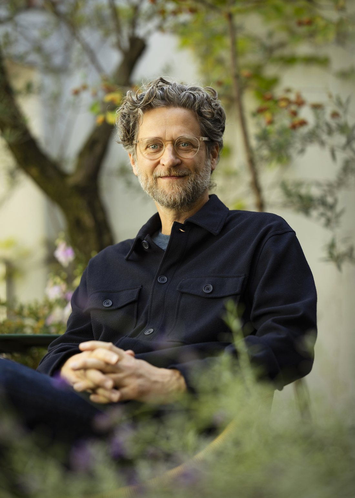

Andrew Amondson is known for large-scale kinetic and living installations reflecting on our connections to nature and one another.
“My work isn’t about replacing the experience of being in nature; it is an invitation to reflect on our relationship with it and how, like a forest, we are all connected.”
Andrew Amondson - Messums West
Andrew is an American-born artist living in Berlin. He grew up in the Pacific Northwest, exploring old-growth forests as a child. He has been a member of Studio Olafur Eliasson since 2017, where he is also part of EER (Experimenting, Experiencing, Reflecting), a collaborative research initiative between Studio Olafur Eliasson and the Interacting Minds Centre at Aarhus University. His walking practice, Walking With, was developed into an art-science research project within the framework of the Studio and EER. As an adaptive walking score, it was part of the 2025 Festival of Future Nows at the Neue Nationalgalerie.
Andrew has been a lead artist since 2021 with Forest of Imagination, an annual, award-winning contemporary arts and architecture event in Bath, UK, that transforms familiar urban or natural spaces into temporary, imaginative landscapes, and spaces for liberated learning. His Living Tree Mirror Maze received the Inspire Future Generations Award in London in 2022.
His film work includes collaborations with Wim Wenders and the Berlin International Film Festival, and work as a director, producer and creative strategist for Netflix.
Andrew is a Fellow of the Hawkwood Centre for Future Thinking and of the Royal Society of Arts.
For commissions, collaborations, or to arrange a walk, write to